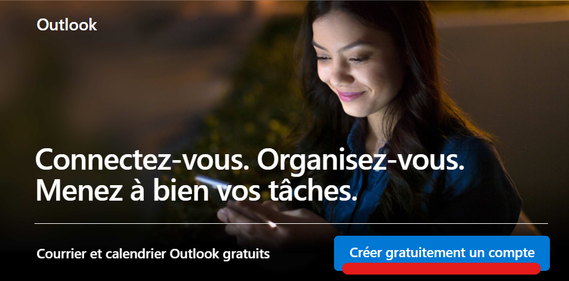

| Conseil:Si vous le pouvez, utilisez un autre navigateur (ou une autre machine) que celui que vous utilisez habituellement. Cela vous permettra de sauvegarder les mots de passes et diminuera le risque de collision avec vos éventuels comptes existant. | ||
| 1 | Commençez par vous rendre à l'adresse https://www.live.com. |  |